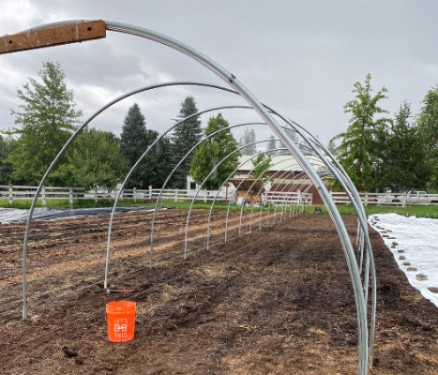

Animals and Plants

Pigs
Pictured is Lucky P, he looks a little different than the pig we all grew up with. He is actually a Kunekune pig and that is the most common type of breed we have at the farm. Kunekune pigs are known for being a little fuzzier and are originally from New Zealand. Lucky is the only pig that you will see roaming around the property (mostly looking for food in the form of dropped apples), he is our free range pig. Fun fact: Kunekune pigs often do not affect those with pet allergies!
Greenhouse
The summer of 2020 wasn’t all bad, we were able to add a greenhouse to the farm! This was a very exciting and anticipated addition. Greenhouses are typically used to make sure that plants are protected from extreme heat or cold so that plants can live year-round. This is especially important when we are in the pacific northwest and no stranger to snow and all types of weather. Starting spring of 2021 we are hoping to have the greenhouse completely up and operational to bring everyone produce year-round.
